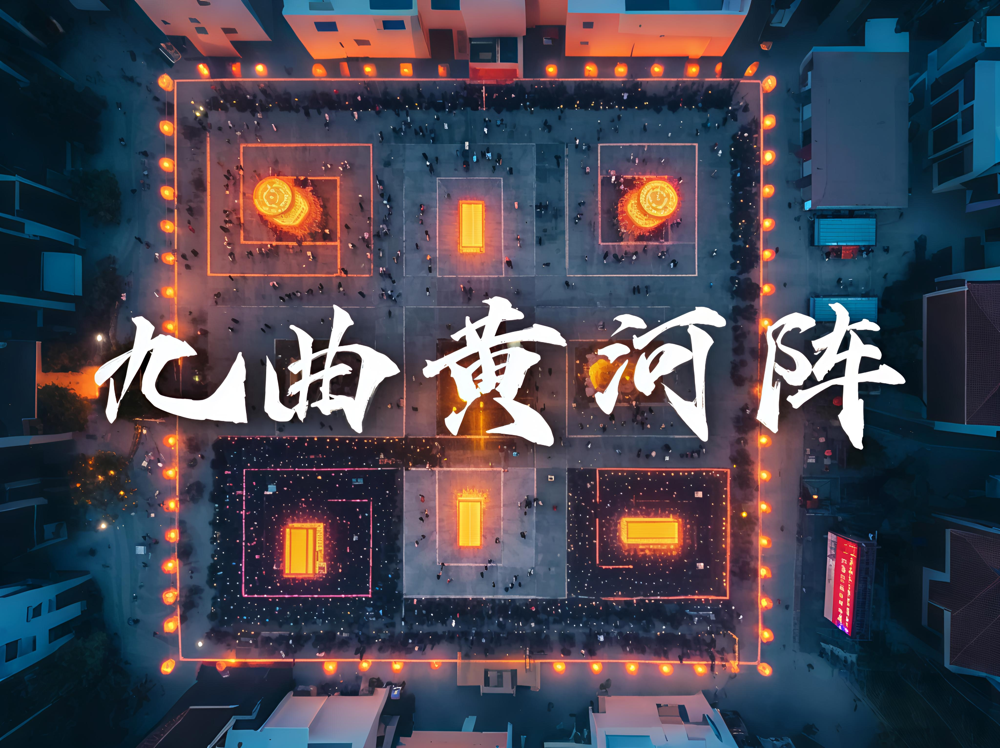

🏮 九曲黄河灯阵

山西大同九曲黄河灯阵是黄河流域最具代表性的传统民俗文化瑰宝之一，其历史渊源可追溯至明代洪武年间，距今已有六百余年传承历史。这一气势恢宏的灯阵奇观融合了周易八卦的哲学智慧、古代军事阵法的精妙布局以及北方农耕文明的祈福传统，形成了独具特色的文化景观。灯阵整体呈正方形布局，严格按照"九宫八卦"的方位设置，以365盏油灯象征周天度数，对应一年365天，其中又细分为24组灯盏代表二十四节气，72盏辅灯象征七十二候，蕴含着古人"天人合一"的宇宙观。灯阵中央矗立着被称为"老杆"的天灯主杆，高达十余米，顶端装饰七星斗和五色旗，下设八卦祭台，四周以九曲回环的路径布置灯盏，总长度可达数千米，行走其间宛如在银河中穿梭。灯阵的制作工艺极为考究：灯座采用大同特产的澄泥烧制，灯碗选用透光性极佳的云母石片，灯油使用当地特产的胡麻油，灯芯则用新棉花手工捻制，点燃后灯火通明却不生黑烟。在当代传承中，这项民俗活动不断创新，如浑源县在保持传统油灯的基础上，引入环保LED灯带，通过智能控制系统实现灯光变幻，再现"黄河之水天上来"的壮美意境。2019年元宵节，大同市举办的九曲黄河灯阵活动吸引了十余万游客参与，创下单日参与人数最多的纪录。学者研究发现，这项活动不仅具有娱乐观赏价值，更是一部活态的传统文化教科书：灯阵路径暗合《孙子兵法》中的"九地之变"，灯盏排列体现《周易》"数往者顺，知来者逆"的哲学思想，转灯仪式则保留着古老的巫傩文化遗存。如今，九曲黄河灯阵已被列入山西省非物质文化遗产名录，成为大同冬季文化旅游的金字招牌。每年正月，当地还会举办配套的民俗展演，如晋北秧歌、威风锣鼓、民间社火等，让游客在转灯祈福的同时，全方位感受晋北文化的独特魅力。这项延续六百年的民俗盛事，正以其深厚的文化底蕴和与时俱进的创新表达，向世人展示着中华优秀传统文化的永恒魅力。